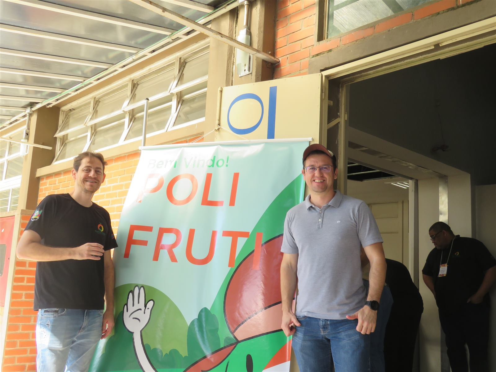

Colégio Politécnico da UFSM · Técnico em Fruticultura EaD · CPFRU060
Plano de Ensino
Vivências em Fruticultura I — Turma 21
Prof. Ezequiel Redin · Prof. Róberson Macedo de Oliveira
03/08 a 17/12/2026 — aulas às segundas-feiras
Antes de começar
Vivências em Fruticultura I — o objetivo, em vídeo
Um resumo do que esta disciplina propõe, antes de entrarmos nos detalhes do plano de ensino.
▶ Assistir no YouTube ↗
Antes de começar
Por que vivência, e não só teoria
Experiências práticas que preparam para o mundo profissional.
▶ Assistir no YouTube ↗
Dados gerais
A disciplina, em números
Curso
Técnico em Fruticultura — EaD · Turma 21
Carga horária
50h EaD + 10h presencial
Período
03/08 a 17/12/2026 — aulas às segundas-feiras
Formato
Encontros predominantemente assíncronos (material no site, fóruns no Moodle e vivências práticas). Algumas segundas-feiras terão encontro síncrono, avisado com antecedência.
Como funciona
Duas frentes que se completam
Teoria
No Moodle
Textos, fóruns e videoaulas — acompanhados no seu ritmo, com prazos avisados com antecedência.
Prática
No campo
Você escolhe uma unidade de produção, vive a experiência, sistematiza o problema observado e leva o resultado para debate.
As duas frentes convergem no mesmo ponto: a organização do V Polifruti, evento de encerramento da disciplina.
Estratégias de ensino
Com o que vamos trabalhar
Textos do professor
Artigos científicos
Livros digitais
Videoaulas
Casos práticos em vídeo
Estrutura da disciplina
Três unidades
Unidade 1 · 4 aulas
Pensamento sistêmico
Origens do pensamento sistêmico, sistemas e componentes, cadeias produtivas e metodologias sistêmicas em situações-problema.
Unidade 2 · 2 aulas
Vivência e saberes
A vivência como fonte de conhecimento, diagnóstico e registro audiovisual a campo.
Unidade 3 · Encerramento
Do pomar ao Polifruti
Sistematização da vivência e organização da participação no V Polifruti.
Avaliação
Como a nota é composta
5%
Ficha da unidade de produção escolhida Aula 1
15%
Diagnóstico consolidado da UPA Aula 4
40%
Vídeo da vivência Fórum + YouTube
40%
Organização e apresentação no V Polifruti
Sem prova teórica! A avaliação acompanha a vivência, não uma prova de conteúdo.
Cronograma de entregas
O que entregar, e onde
Aula
Entrega
Onde
1
Ficha da UPA escolhida
Fórum
4
Diagnóstico consolidado — respostas em texto (aula 2) + mapeamento a jusante (aula 3) + trio efeito/causa/fala (aula 4)
Fórum
U2.2
Vídeo da vivência (4–7 min)
Fórum + YouTube
Final
Proposta de eixo temático + participação no Polifruti
Fórum / evento
Os prazos serão avisados com antecedência.
Para onde tudo converge
V Polifruti
O evento de encerramento da disciplina, com compartilhamento das vivências de toda a turma — produtores, estudantes e pesquisadores na mesma roda.
Data a definir — será avisada oportunamente.

Profs. Ezequiel Redin e Róberson Macedo de Oliveira no Polifruti.
Primeira aula
Síncrona, 03/08
Apresentação do plano de ensino, da disciplina e dos métodos de trabalho e de avaliação — o encontro que estamos tendo agora.
A partir daqui, o curso segue predominantemente assíncrono. Você já sai desta aula sabendo o que vem a seguir: escolher a unidade de produção que vai acompanhar.
Onde encontrar tudo isso
O material completo fica no site da disciplina
Este plano de ensino em slides é um resumo para apresentação. A versão completa, com todos os detalhes, e as aulas de cada unidade, estão sempre disponíveis.
Este plano de ensino resume a estrutura, os critérios de avaliação e o cronograma da disciplina Vivências em Fruticultura I, organizados a partir da experiência de quatro semestres anteriores.
Material organizado com apoio de inteligência artificial (Claude, Anthropic), a partir da experiência de quatro semestres da disciplina. Declaração completa de uso de IA.